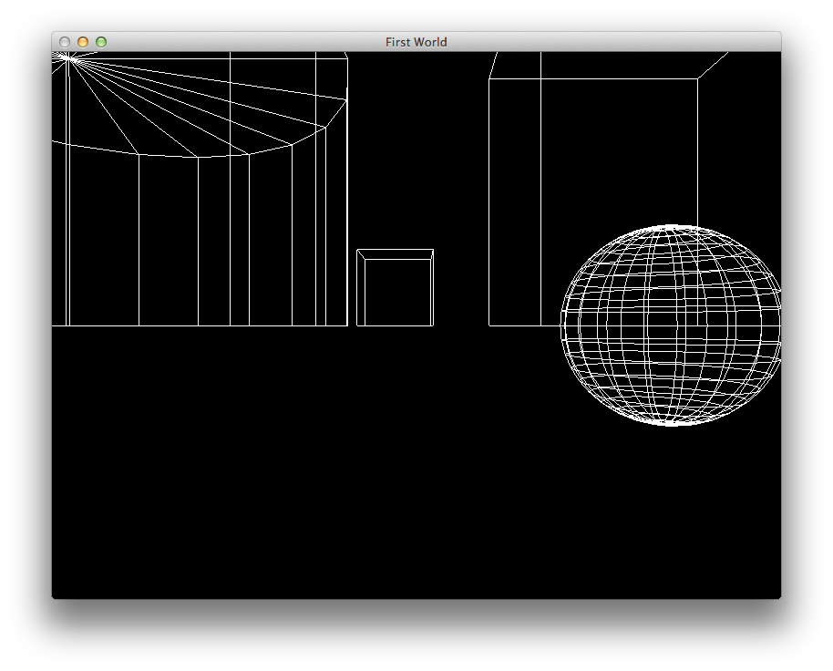

Create a new project in the usual way - called lab08b_model_with_physics - in the usual way.
Create the following folders in the src folderd:
scene
physics
model
utils
world
Incorporate the sources into these folders in the next three steps
For reference purposes only, you might like to download and expand this final version of the project for this lab:
However, it would be best if you explored the project as suggested in the lab steps.
Incorporate the following classes into utils:
Incorporate these classes into the world folder:
The project should now build - however we still need a main for it to link:
If you put this model file on the default path:
This is the original maya file:
If you run the program, it should display:

Introduce the following classes into the world package:
Now incorporate a camera member into the world class:
struct World
{
void initialize(std::string name, int width, int height);
void keyPress(unsigned char ch);
void start();
void render();
static World& GetInstance();
static World *s_World;
GeometryMap *renderables;
Projectors projectors;
Camera camera;
};
void World::render()
{
glClearColor(0.0, 0.0, 0.0, 1.0);
glClear(GL_COLOR_BUFFER_BIT | GL_DEPTH_BUFFER_BIT);
if (projectors.isPerspective())
{
glLoadIdentity();
camera.render();
}
//...
}
void World::keyPress(unsigned char ch)
{
if (ch >= '1' && ch <= '4')
{
projectors.keyPress(ch);
}
else
{
if (projectors.isPerspective())
{
camera.keyStroke(ch);
}
}
glutPostRedisplay();
}
Introduce these two classes into the physics folder: - cubeactor.h
These should build without incident
//GeometryMap *renderables;
Scene *scene;
void tickAndRender();
In World implementation, we need to implement this function:
void World::tickAndRender()
{
static clock_t lastTime = 0;
if (lastTime == 0)
lastTime = clock();
clock_t currTime = clock();
clock_t deltaTime = currTime - lastTime;
float secondsDelta = (float)deltaTime/CLOCKS_PER_SEC;
scene->tick(secondsDelta);
glutPostRedisplay();
}
//foreach (GeometryMap::value_type geometry, *renderables)
// {
// geometry.second.render();
// }
scene->render();
void World::start()
{
timerFunc(0);
glutMainLoop();
}
// theWorld.renderables = &model->entities;
Scene *scene = new Scene (model);
theWorld.scene = scene;
theWorld.start();
void timerFunc(int value);
void timerFunc(int value)
{
theWorld.tickAndRender();
glutTimerFunc(50, timerFunc, 1);
}
If you are loading the same model, it contains a object called 'cube'. The above code had wires behaviour for that object
When you run the program, the cube should animate